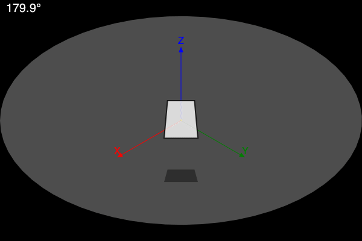
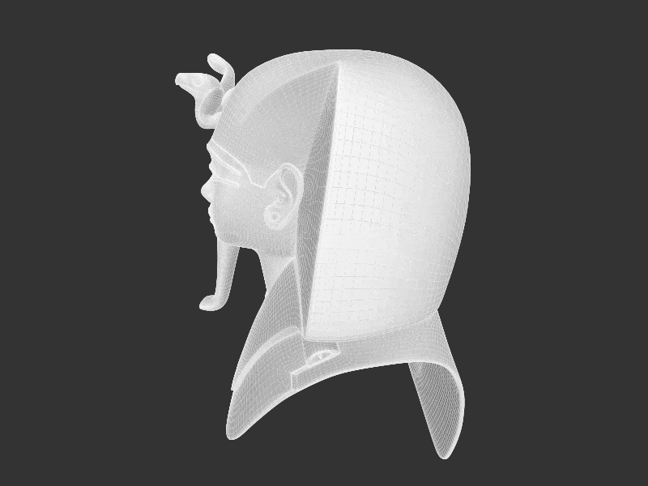

Objects
So far we’ve been drawing individual points, lines, and polygons. pin() has been projecting them all onto the current drawing.
You can also draw an object. This lets us complete the pin-table:
pin() arguments | the gfunction arguments | |
|---|---|---|
| point | pin(p1::Point3D) | (p3::Point3D, p2::Point) |
| line | pin(p1::Point3D, p2::Point3D) | ((p31::Point3D, p32::Point3D), (p21::Point, p22::Point)) |
| polygon | pin(a::Vector{Point3D}) | (a1::Vector{Point3D}, a2::Vector{Point}) |
| object | pin(o::Object) | (o::Object) |
An object is a collection of 3D points and a list of faces - which vertices are joined to form a face.
Making objects with make
You can make a 3D object using make(), and then use pin() to project it onto the 2D drawing.
make() expects an array of 3D points, an (optional) array of face definitions, and an (optional) array of labels, plus an (optional) name. These arrays let you link faces with vertices. It returns an Object.
Information about cubes is already defined in Thebes (we needn't have made one earlier, really) as Cube, a tuple of Point3Ds and face definitions. You can make a cube object from this data with:
cube = make(Cube, "cube")Now the cube variable contains:
Object(
Point3D[
Point3D(-0.5, 0.5, -0.5),
Point3D(0.5, 0.5, -0.5),
Point3D(0.5, -0.5, -0.5),
Point3D(-0.5, -0.5, -0.5),
Point3D(-0.5, 0.5, 0.5),
Point3D(0.5, 0.5, 0.5),
Point3D(0.5, -0.5, 0.5),
Point3D(-0.5, -0.5, 0.5)
],
[[1, 2, 3, 4],
[2, 6, 7, 3],
[6, 5, 8, 7],
[5, 1, 4, 8],
[1, 5, 6, 2],
[4, 3, 7, 8]],
[1, 2, 3, 4, 5, 6],
"cube")There are 8 3D points. And there are 6 faces defined. Face 1 is formed by vertices 1, 2, 3, and 4, face 2 is formed by vertices 2, 6, 7, and 3, and so on. The default rendering applied by pin(o::Object) is an attempt at a simple hidden-surface display.
@drawsvg begin
eyepoint(2, 2, 2)
perspective(500)
cube = make(Cube, "cube")
pin(cube)
end 800 400" fill-opacity="1"/>
<path fill-rule="nonzero" fill="rgb(30.408672%25, 30.408672%25, 30.408672%25)" fill-opacity="1" d="M 494.210938 254.394531 L 400 328.566406 L 305.789062 254.394531 L 400 200 "/>
<path fill="none" stroke-width="2" stroke-linecap="butt" stroke-linejoin="miter" stroke="rgb(100%25, 100%25, 100%25)" stroke-opacity="1" stroke-miterlimit="10" d="M 494.210938 254.394531 L 400 328.566406 L 305.789062 254.394531 L 400 200 Z M 494.210938 254.394531 "/>
<path fill-rule="nonzero" fill="rgb(30.408672%25, 30.408672%25, 30.408672%25)" fill-opacity="1" d="M 400 200 L 305.789062 254.394531 L 288.660156 135.71875 L 400 91.214844 "/>
<path fill="none" stroke-width="2" stroke-linecap="butt" stroke-linejoin="miter" stroke="rgb(100%25, 100%25, 100%25)" stroke-opacity="1" stroke-miterlimit="10" d="M 400 200 L 305.789062 254.394531 L 288.660156 135.71875 L 400 91.214844 Z M 400 200 "/>
<path fill-rule="nonzero" fill="rgb(30.408672%25, 30.408672%25, 30.408672%25)" fill-opacity="1" d="M 511.339844 135.71875 L 494.210938 254.394531 L 400 200 L 400 91.214844 "/>
<path fill="none" stroke-width="2" stroke-linecap="butt" stroke-linejoin="miter" stroke="rgb(100%25, 100%25, 100%25)" stroke-opacity="1" stroke-miterlimit="10" d="M 511.339844 135.71875 L 494.210938 254.394531 L 400 200 L 400 91.214844 Z M 511.339844 135.71875 "/>
<path fill-rule="nonzero" fill="rgb(69.591328%25, 69.591328%25, 69.591328%25)" fill-opacity="1" d="M 494.210938 254.394531 L 511.339844 135.71875 L 400 200 L 400 328.566406 "/>
<path fill="none" stroke-width="2" stroke-linecap="butt" stroke-linejoin="miter" stroke="rgb(100%25, 100%25, 100%25)" stroke-opacity="1" stroke-miterlimit="10" d="M 494.210938 254.394531 L 511.339844 135.71875 L 400 200 L 400 328.566406 Z M 494.210938 254.394531 "/>
<path fill-rule="nonzero" fill="rgb(69.591328%25, 69.591328%25, 69.591328%25)" fill-opacity="1" d="M 400 200 L 511.339844 135.71875 L 400 91.214844 L 288.660156 135.71875 "/>
<path fill="none" stroke-width="2" stroke-linecap="butt" stroke-linejoin="miter" stroke="rgb(100%25, 100%25, 100%25)" stroke-opacity="1" stroke-miterlimit="10" d="M 400 200 L 511.339844 135.71875 L 400 91.214844 L 288.660156 135.71875 Z M 400 200 "/>
<path fill-rule="nonzero" fill="rgb(69.591328%25, 69.591328%25, 69.591328%25)" fill-opacity="1" d="M 400 328.566406 L 400 200 L 288.660156 135.71875 L 305.789062 254.394531 "/>
<path fill="none" stroke-width="2" stroke-linecap="butt" stroke-linejoin="miter" stroke="rgb(100%25, 100%25, 100%25)" stroke-opacity="1" stroke-miterlimit="10" d="M 400 328.566406 L 400 200 L 288.660156 135.71875 L 305.789062 254.394531 Z M 400 328.566406 "/>
</svg>)
The default gfunction for this method of pin is hiddensurface, which is built in to Thebes as Thebes.hiddensurface(o::Object). We could call:
pin(cube, gfunction = hiddensurface)to specify the rendering function explicitly.
Another built-in gfunction is wireframe(o::Object):
@drawsvg begin
eyepoint(2, 2, 2)
perspective(500)
sethue("gold")
cube = make(Cube, "cube")
pin(cube, gfunction = wireframe)
end 800 400" fill-opacity="1"/>
<path fill="none" stroke-width="2" stroke-linecap="butt" stroke-linejoin="miter" stroke="rgb(100%25, 84.313725%25, 0%25)" stroke-opacity="1" stroke-miterlimit="10" d="M 494.210938 254.394531 L 400 328.566406 L 305.789062 254.394531 L 400 200 Z M 494.210938 254.394531 "/>
<path fill="none" stroke-width="2" stroke-linecap="butt" stroke-linejoin="miter" stroke="rgb(100%25, 84.313725%25, 0%25)" stroke-opacity="1" stroke-miterlimit="10" d="M 400 200 L 305.789062 254.394531 L 288.660156 135.71875 L 400 91.214844 Z M 400 200 "/>
<path fill="none" stroke-width="2" stroke-linecap="butt" stroke-linejoin="miter" stroke="rgb(100%25, 84.313725%25, 0%25)" stroke-opacity="1" stroke-miterlimit="10" d="M 511.339844 135.71875 L 494.210938 254.394531 L 400 200 L 400 91.214844 Z M 511.339844 135.71875 "/>
<path fill="none" stroke-width="2" stroke-linecap="butt" stroke-linejoin="miter" stroke="rgb(100%25, 84.313725%25, 0%25)" stroke-opacity="1" stroke-miterlimit="10" d="M 494.210938 254.394531 L 511.339844 135.71875 L 400 200 L 400 328.566406 Z M 494.210938 254.394531 "/>
<path fill="none" stroke-width="2" stroke-linecap="butt" stroke-linejoin="miter" stroke="rgb(100%25, 84.313725%25, 0%25)" stroke-opacity="1" stroke-miterlimit="10" d="M 400 200 L 511.339844 135.71875 L 400 91.214844 L 288.660156 135.71875 Z M 400 200 "/>
<path fill="none" stroke-width="2" stroke-linecap="butt" stroke-linejoin="miter" stroke="rgb(100%25, 84.313725%25, 0%25)" stroke-opacity="1" stroke-miterlimit="10" d="M 400 328.566406 L 400 200 L 288.660156 135.71875 L 305.789062 254.394531 Z M 400 328.566406 "/>
</svg>)
Making objects directly
Here's a very simple example of how you might make your own object from scratch. We'll make a heptagonal pyramid, setting N to 7.
@drawsvg begin
setlinejoin("bevel")
carpet(200)
vertices = Point3D[]
# heptagonal = 7
N = 7
# make the base
polygon = ngon(O, 150, N, vertices=true)
for i in eachindex(polygon)
push!(vertices, convert(Point3D, polygon[i]))
end
# add the tip 200 units above the base
push!(vertices, Point3D(0, 0, 200))
# make the faces
faces = Vector{Int64}[]
for i in eachindex(polygon)
push!(faces, [i, mod1(i + 1, N), N + 1])
end
obj = make([vertices, faces], "")
setopacity(0.8)
pin(obj, gfunction = hiddensurface)
end 800 600" fill-opacity="1"/>
<path fill-rule="nonzero" fill="rgb(0%25, 0%25, 0%25)" fill-opacity="1" d="M 258.578125 381.648438 L 273.402344 389.394531 L 289.492188 396.242188 L 306.6875 402.132812 L 324.8125 407 L 343.691406 410.800781 L 363.132812 413.492188 L 382.941406 415.050781 L 402.921875 415.457031 L 422.871094 414.710938 L 442.589844 412.820312 L 461.886719 409.804688 L 480.566406 405.6875 L 498.4375 400.515625 L 515.328125 394.339844 L 531.0625 387.222656 L 545.492188 379.230469 L 558.464844 370.449219 L 569.855469 360.964844 L 579.546875 350.867188 L 587.445312 340.265625 L 593.472656 329.261719 L 597.566406 317.960938 L 599.683594 306.484375 L 599.808594 294.945312 L 597.9375 283.453125 L 594.085938 272.125 L 588.296875 261.078125 L 580.625 250.417969 L 571.148438 240.257812 L 559.964844 230.691406 L 547.179688 221.816406 L 532.925781 213.722656 L 517.34375 206.492188 L 500.585938 200.195312 L 482.828125 194.898438 L 464.238281 190.648438 L 445.007812 187.492188 L 425.328125 185.460938 L 405.398438 184.570312 L 385.410156 184.835938 L 365.570312 186.253906 L 346.074219 188.804688 L 327.117188 192.46875 L 308.886719 197.207031 L 291.566406 202.972656 L 275.332031 209.707031 L 260.339844 217.34375 L 246.746094 225.808594 L 234.683594 235.011719 L 224.273438 244.863281 L 215.617188 255.269531 L 208.800781 266.121094 L 203.898438 277.308594 L 200.957031 288.726562 L 200 300.253906 L 201.042969 311.78125 L 204.074219 323.191406 L 209.0625 334.367188 L 215.960938 345.203125 L 224.695312 355.582031 L 235.183594 365.410156 L 247.316406 374.582031 Z M 258.578125 381.648438 "/>
<path fill-rule="nonzero" fill="rgb(38.651464%25, 38.651464%25, 38.651464%25)" fill-opacity="0.8" d="M 449.542969 218.257812 L 320.195312 226.671875 L 400 136.699219 "/>
<path fill="none" stroke-width="2" stroke-linecap="butt" stroke-linejoin="bevel" stroke="rgb(100%25, 100%25, 100%25)" stroke-opacity="0.8" stroke-miterlimit="10" d="M 449.542969 218.257812 L 320.195312 226.671875 L 400 136.699219 Z M 449.542969 218.257812 "/>
<path fill-rule="nonzero" fill="rgb(45.042223%25, 45.042223%25, 45.042223%25)" fill-opacity="0.8" d="M 541.582031 271.398438 L 449.542969 218.257812 L 400 136.699219 "/>
<path fill="none" stroke-width="2" stroke-linecap="butt" stroke-linejoin="bevel" stroke="rgb(100%25, 100%25, 100%25)" stroke-opacity="0.8" stroke-miterlimit="10" d="M 541.582031 271.398438 L 449.542969 218.257812 L 400 136.699219 Z M 541.582031 271.398438 "/>
<path fill-rule="nonzero" fill="rgb(48.832116%25, 48.832116%25, 48.832116%25)" fill-opacity="0.8" d="M 320.195312 226.671875 L 250.941406 290.304688 L 400 136.699219 "/>
<path fill="none" stroke-width="2" stroke-linecap="butt" stroke-linejoin="bevel" stroke="rgb(100%25, 100%25, 100%25)" stroke-opacity="0.8" stroke-miterlimit="10" d="M 320.195312 226.671875 L 250.941406 290.304688 L 400 136.699219 Z M 320.195312 226.671875 "/>
<path fill-rule="nonzero" fill="rgb(63.06417%25, 63.06417%25, 63.06417%25)" fill-opacity="0.8" d="M 527.007812 346.074219 L 541.582031 271.398438 L 400 136.699219 "/>
<path fill="none" stroke-width="2" stroke-linecap="butt" stroke-linejoin="bevel" stroke="rgb(100%25, 100%25, 100%25)" stroke-opacity="0.8" stroke-miterlimit="10" d="M 527.007812 346.074219 L 541.582031 271.398438 L 400 136.699219 Z M 527.007812 346.074219 "/>
<path fill-rule="nonzero" fill="rgb(68.411325%25, 68.411325%25, 68.411325%25)" fill-opacity="0.8" d="M 250.941406 290.304688 L 293.933594 361.238281 L 400 136.699219 "/>
<path fill="none" stroke-width="2" stroke-linecap="butt" stroke-linejoin="bevel" stroke="rgb(100%25, 100%25, 100%25)" stroke-opacity="0.8" stroke-miterlimit="10" d="M 250.941406 290.304688 L 293.933594 361.238281 L 400 136.699219 Z M 250.941406 290.304688 "/>
<path fill-rule="nonzero" fill="rgb(85.359707%25, 85.359707%25, 85.359707%25)" fill-opacity="0.8" d="M 416.792969 386.058594 L 527.007812 346.074219 L 400 136.699219 "/>
<path fill="none" stroke-width="2" stroke-linecap="butt" stroke-linejoin="bevel" stroke="rgb(100%25, 100%25, 100%25)" stroke-opacity="0.8" stroke-miterlimit="10" d="M 416.792969 386.058594 L 527.007812 346.074219 L 400 136.699219 Z M 416.792969 386.058594 "/>
<path fill-rule="nonzero" fill="rgb(91.174692%25, 91.174692%25, 91.174692%25)" fill-opacity="0.8" d="M 293.933594 361.238281 L 416.792969 386.058594 L 400 136.699219 "/>
<path fill="none" stroke-width="2" stroke-linecap="butt" stroke-linejoin="bevel" stroke="rgb(100%25, 100%25, 100%25)" stroke-opacity="0.8" stroke-miterlimit="10" d="M 293.933594 361.238281 L 416.792969 386.058594 L 400 136.699219 Z M 293.933594 361.238281 "/>
</svg>)
First we pushed the vertices into an array, then added the top vertex as the N + 1th. The faces array is filled with lists such as [1, 2, N], [2, 3, N] to make the sides. Finally the make() function takes the vertices and faces and returns an Object.
The pyramid doesn't have a base. To add one, add the line:
push!(faces, 1:N)just before the make() function builds the object.
Using objects
Thebes has a few 3D coordinate sets pre-defined that you can use with make():
@drawsvg begin
setlinejoin("bevel")
perspective(250)
eyepoint(2, 2, 2)
setopacity(0.8)
pts = between.(boxmiddleleft(), boxmiddleright(), range(0.1, 0.9, length=4))
for (n, o) in enumerate((Cube, Pyramid, Tetrahedron, Teapot))
@layer begin
translate(pts[n])
pin(make(o))
end
end
end 800 300These are automatically imported (from data/objects.jl) when Thebes.jl starts:
- Cube
- Tetrahedron
- Pyramid
- Teapot
The teapot is a thing in the world of 3D modelling, apparently.
@drawsvg begin
perspective(500)
eyepoint(200, 200, 150)
carpet(200)
axes3D()
teapot = make(Teapot)
setline(0.5)
sethue("white")
scaleby!(teapot, 100, 100, 100)
pin(teapot, gfunction=hiddensurface)
end 800 400You can load more objects by including the moreobjects.jl file from the data folder:
include(dirname(dirname(pathof(Thebes))) * "/data/moreobjects.jl")which brings these objects into play:
boxcube boxtorus concave cone crossshape cube cuboctahedron dodecahedron geodesic helix2 icosahedron icosidodecahedron octahedron octtorus rhombicosidodecahedron rhombicuboctahedron rhombitruncated_cubeoctahedron rhombitruncated_icosidodecahedron snub_cube snub_dodecahedron sphere2 tet3d tetrahedron triangle truncated_cube truncated_dodecahedron truncated_icosahedron truncated_octahedron truncated_tetrahedron
Rendering objects
Rendering objects realistically is not something that Thebes really bothers with - there are many better options for this task.
There are many choices you can make about how to draw the faces and the vertices of an object.
Writing gfunctions
The gfunction for pin(o::Object) determines the rendering style for an object.
Here's a simple example of a custom gfunction:
function mygfunction(o::Object)
sortfaces!(o)
if !isempty(o.faces)
@layer begin
for (n, face) in enumerate(o.faces)
@layer begin
vertices = o.vertices[face]
sn = surfacenormal(vertices)
ang = anglebetweenvectors(sn, eyepoint())
setgrey(rescale(ang, 0, π, 0, 1))
pin(vertices, gfunction=(p3, p2) -> poly(p2, :fill))
end
end
end
end
end
include(dirname(pathof(Thebes)) * "/../data/moreobjects.jl")
object = make(geodesic, "geodesic")
@draw begin
setlinejoin("bevel")
eyepoint(200, 200, 200)
pin(scaleby!(object, 300, 300, 300), gfunction=mygfunction)
end 800 800pin(o::Object) here calls mygfunction(o::Object) to render object o. First, the sortfaces(o::Object) function sorts the faces in the object o so that the ones that are furthest from the eyepoint are stored first. Then the surface normal of each face is calculated, and the angle between the surface normal and a line to the eyepoint determines the color of the face.
The surface normal is an imaginary line that meets the face at right angles, and thus indicates the direction of that face. If you measure the angle between the surface normal and the direction of a line from the origin to the eye point, you can obtain a value that indicates the orientation of the face relative to the eye point. You can then use this to control the rendering: an angle approaching π suggests that the facet is almost facing the viewer, and you can color it accordingly.

Using custom code
Thebes.jl is a toy rather than a full 3D renderer, and a general-purpose rendering function that draws everything with lots of optional parameters is not provided. There are plenty of ways to experiment though.
Suppose you want to remove the front-facing faces of an object, in order to see inside. That's possible, but a bit of code is needed.
using Thebes
using Luxor
using Rotations
function mygfunction(o::Object)
sortfaces!(o)
if !isempty(o.faces)
@layer begin
for (n, face) in enumerate(o.faces)
@layer begin
vertices = o.vertices[face]
sn = surfacenormal(vertices)
ang = anglebetweenvectors(sn, eyepoint())
setgrey(rescale(ang, 0, π, 0, 1))
pin(vertices, gfunction=(p3, p2) -> poly(p2, :fillpreserve))
sethue("grey20")
strokepath()
end
end
end
end
end
function cullfrontfaces!(m::Object, angle;
eyepoint::Point3D=eyepoint())
avgs = Float64[]
for face in m.faces
vertices = m.vertices[face]
s = 0.0
for vertex in vertices
s += distance(vertex, eyepoint)
end
average = s / length(unique(vertices))
θ⃗ = surfacenormal(vertices)
if anglebetweenvectors(θ⃗, eyepoint) > angle
push!(avgs, average)
end
end
neworder = sortperm(avgs)
m.faces = m.faces[neworder]
m.labels = m.labels[neworder]
return m
end
@drawsvg begin
helloworld()
setlinejoin("bevel")
setline(0.5)
setopacity(0.8)
include(dirname(pathof(Thebes)) * "/../data/moreobjects.jl")
shape = icosidodecahedron
objectfull = make(shape, "the full object")
objectcut = make(shape, "the cut-open object")
map(o -> scaleby!(o, 150, 150, 150), (objectfull, objectcut))
sortfaces!.((objectcut, objectfull))
cullfrontfaces!(objectcut, π / 3)
translate(-200, 0)
pin(objectcut, gfunction=mygfunction)
translate(400, 0)
pin(objectfull, gfunction=mygfunction)
end 800 600The object on the left has had its frontfacing faces removed. The one on the right is intact.
There are probably better ways to do this...!
OFF the shelf objects
There are many formats for exchanging 3D data between software applications. Thebes.jl knows about one of these formats, the Object File Format (.OFF). You'll find a few objects already made for you to use directly.
Here's what a typical OFF file, "cube.off", looks like:
OFF
8 6 0
-0.500000 -0.500000 0.500000
0.500000 -0.500000 0.500000
-0.500000 0.500000 0.500000
0.500000 0.500000 0.500000
-0.500000 0.500000 -0.500000
0.500000 0.500000 -0.500000
-0.500000 -0.500000 -0.500000
0.500000 -0.500000 -0.500000
4 0 1 3 2
4 2 3 5 4
4 4 5 7 6
4 6 7 1 0
4 1 7 5 3
4 6 0 2 4The file contains 8 3D points, defined as three numbers, followed by the definitions of 6 faces. The first face 4 0 1 3 2 has 4 vertices, and joins vertices 0 (on line 3), 1, 3, and 2.
To load the contents of the OFF file into an object, use import_off_file().
Here's an example that loads an OFF file of the mask of Tutenkhamun (whicn can be found in the Thebes data directory) and rotates it.
using Thebes, Luxor # hide
function frame(scene, framenumber, o)
eased_n = rescale(scene.easingfunction(framenumber, 0, 1,
scene.framerange.stop), 0, 1, 0, 2π)
helloworld()
perspective(300)
eyepoint(200cos(eased_n), 200sin(eased_n), 80)
background("grey20")
setlinejoin("bevel")
setline(0.2)
pin(o)
end
function main()
scaleby!(o, 15)
moveby!(o, 0, 0, -150)
amovie = Movie(800, 600, "tut")
animate(amovie,
Scene(amovie, (s, f) -> frame(s, f, o), 1:100),
framerate=15,
creategif=true)
end
f = dirname(dirname(pathof(Thebes))) * "/data/tut.off"
o = make(import_off_file(f))
main()